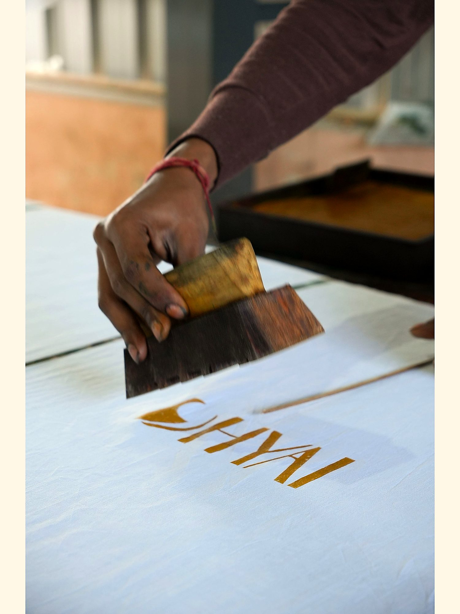
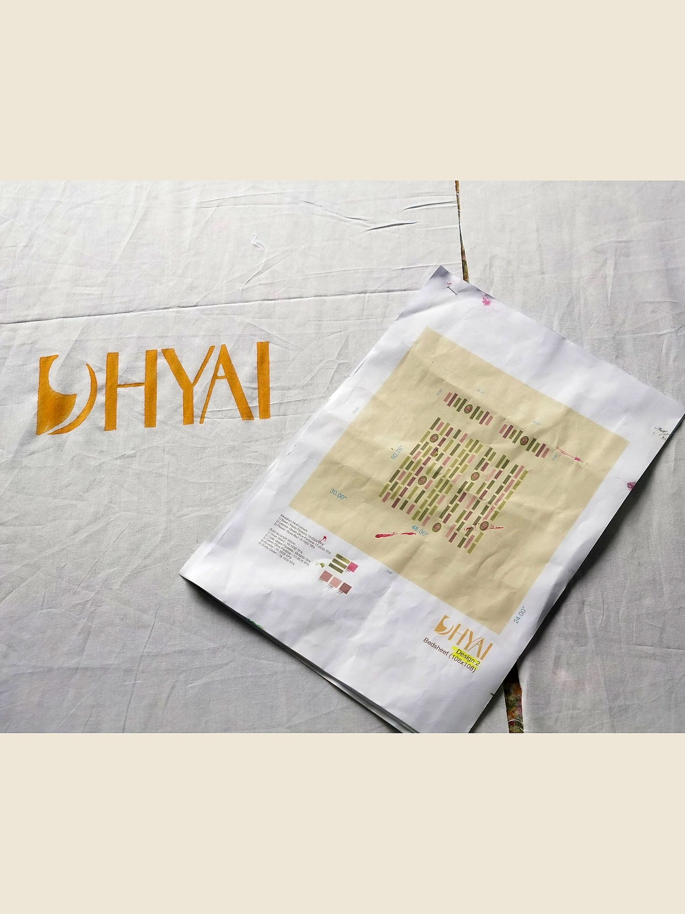
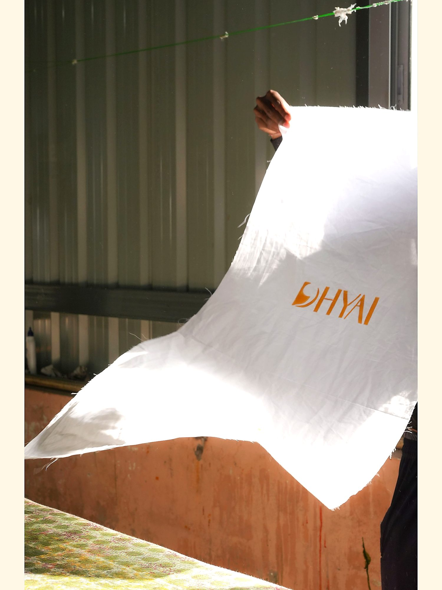

Studio
DHYAI is a material and surface design practice based in Bengaluru. The studio develops objects, textiles, and material studies meant to live with.
The name ध्यै is Sanskrit — to fix the mind upon. A fold. A weight. A softened edge. A repeated touch. Some objects mark a moment. Others remain after the moment has passed. Dhyai works with the latter.
Each piece begins with material weight, texture, density, and the way a surface interacts with light. Form is derived from these conditions. The work begins with how an object is held: through handling, wear, and continued presence within a space.
The studio works between structure, surface, material, and use. The work is produced in small numbers, by hand, in workshops the studio has chosen to work with over time.
Nothing is hurried.



